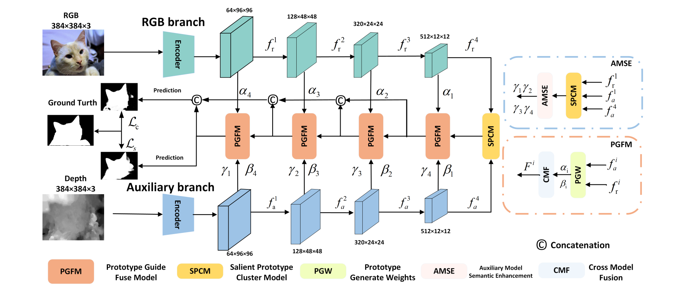
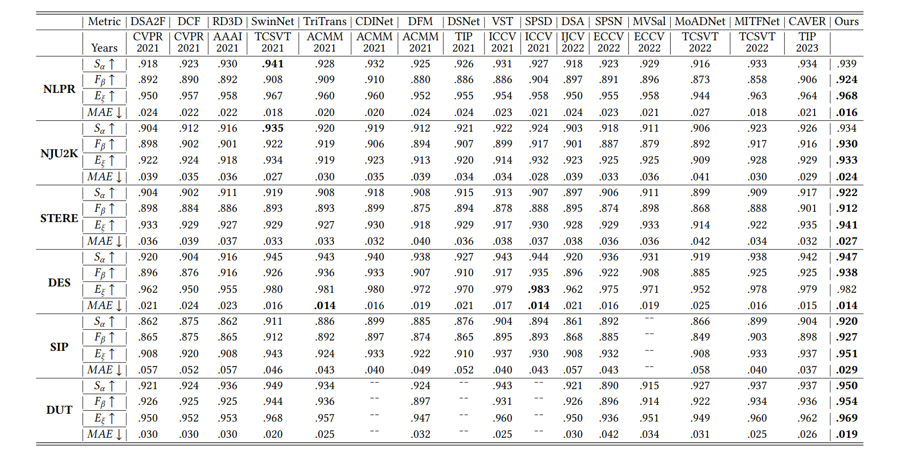
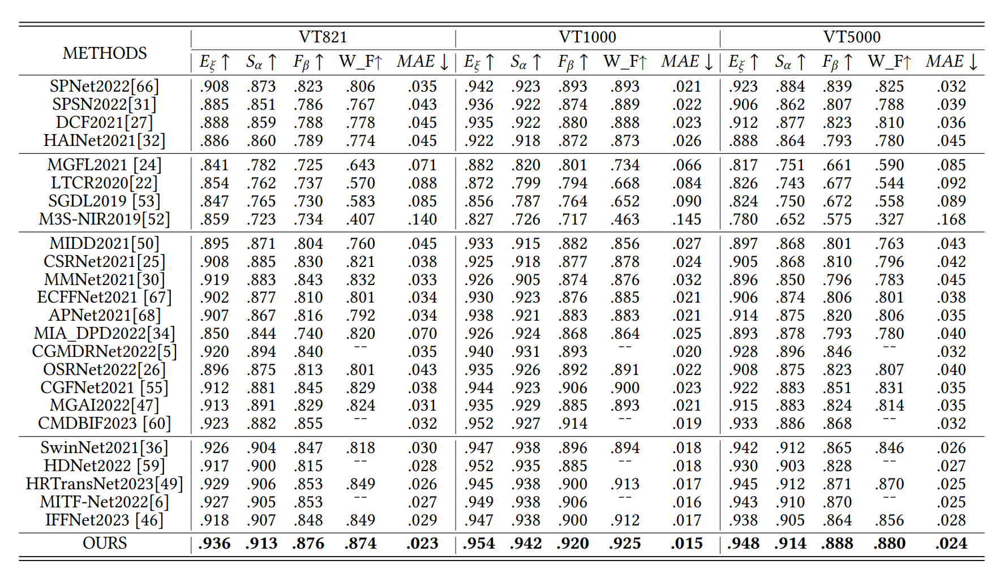
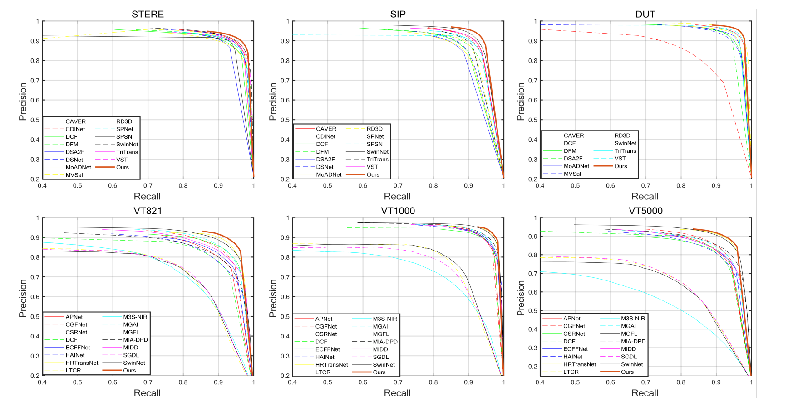

Qualitative Evaluation
 |
|---|
Fig. 3: Visual comparison results with other the state-of-the-art RGB-D models.
Joint Correcting and Refinement for Balanced Low-Light Image Enhancement
IEEE Transactions on Multimedia
Nana Yu, Hong Shi, Yahong Han,
College of Intelligence and Computing, and Tianjin Key Lab of Machine Learning, Tianjin University
Abstract
Low-light image enhancement tasks demand an appropriate balance among brightness, color, and illumination. While existing methods often focus on one aspect of the image without considering how to pay attention to this balance, which will cause problems of color distortion and overexposure etc. This seriously affects both human visual perception and the performance of high-level visual models. In this work, a novel synergistic structure is proposed which can balance brightness, color, and illumination more effectively. Specifically, the proposed method, so-called Joint Correcting and Refinement Network (JCRNet), which mainly consists of three stages to balance brightness, color, and illumination of enhancement. Stage 1: we utilize a basic encoder-decoder and local supervision mechanism to extract local information and more comprehensive details for enhancement. Stage 2: cross-stage feature transmission and spatial feature transformation further facilitate color correction and feature refinement. Stage 3: we employ a dynamic illumination adjustment approach to embed residuals between predicted and ground truth images into the model, adaptively adjusting illumination balance. Extensive experiments demonstrate that the proposed method exhibits comprehensive performance advantages over 21 state-of-the-art methods on 9 benchmark datasets. Furthermore, a more persuasive experiment has been conducted to validate our approach the effectiveness in downstream visual tasks (e.g., saliency detection). Compared to several enhancement models, the proposed method effectively improves the segmentation results and quantitative metrics of saliency detection.
Overall architecture of the Joint Correcting and Refinement Network
|  |
|---|
Fig. 1: Overall architecture of the Saliency Prototype Network. After feature extraction, the RGB and D/T images perform prototype clustering separately to focus on salient regions before performing cross-modal feature fusion. On the right side, the AMSE module generates parameters for cross-modal fusion, guiding the fusion process but not directly participating in the overall architecture.
Quantitative Evaluation
|  |
|---|
Table. 1: S-measure, adaptive F-measure, adaptive E-measure, MAE comparisons with different RGB-D models. The best result is in bold. "¯¯" means that the method does not publish test results for this dataset or code.
|  |
|---|
Table. 2: S-measure, adaptive F-measure, adaptive E-measure, MAE comparisons with different RGB-T models. First column represents the RGB-D methods adapted for RGB-T. Second column represents conventional RGB-T methods. Third column represents CNN-based RGB-T methods. Fourth column represents Transform-based RGB-T methods.
|  |
|---|
Fig. 2: P-R curves comparisons of different models on six datasets of RGB-D and RGB-T.
Qualitative Evaluation
|
|---|
Fig. 3: Visual comparison results with other the state-of-the-art RGB-D models.
Citation
If you find this useful in your work, please consider citing the following reference:
@Article{SPNet,
author = {Zihao Zhang, Jie Wang, Yahong Han},
title = {Saliency Prototype for RGB-D and RGB-T Salient Object Detection},
journal = {},
year = {2023},
doi = {}
}
Any question regarding this work can be addressed to zhangzihao2490@@tju.edu.cn.